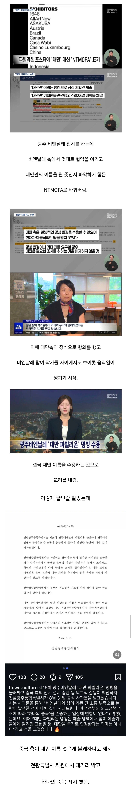

대만 삭제했다 난리난 광주 비엔날레 근황의 근황
댓글
정부의 외교정책은 이럴때 따르는거 꼴받네요잉
저쪽ㅈㅣ역은 왜저런다냐
그런데 일베충은 왜 그럼?
머라하는데 걔들은? 난 잘모름
그리고 적당히 해라 다른 지자체들이 ㅂㅅ짓히면 ㅂㅅ짓한다고 말하고 까는데
저쪽은 뭐만하면 너처럼 베충이어쩌고 댓글달음
ㅋ 걍 못하는건 못하고 잘하는건 잘한다 라고 비판과 칭찬을 받아들일 수 있어야하는데
먼 성역마냥 좀만 머라하면 개 ㅈㄹ하니까
저꼬라지 인거고 이미지도 ㅅ창난거다
저게 정상으로 보이냐?
저건 지자체의 뜻이 아니라 국가의 뜻인데 왜 그걸 가지고 지자체 탓을 하고 있니 일베충아.
성역이랑 상관 없는데 성역은 또 왜나와 일베충아
광전특별시가 성명문 낸거아님? 지자체가 한게아님? 윗색기기 댓글달잖아
어후 존나 귀찮다 걍 알아해라
이미지 어차피 존나 안좋게느껴진다 이제 댓글 안달란다
설명문 보면 '정부의 외교정책 기조에 따라'라고 적혀있잖아?
외국인이라서 한글을 못읽어서 그런거지? 설마 난독이거나 멍청해서 그런거겠어?
여기저기 일베몰이하네 ㅋㅋㅋㅋ
너 = 전라도 이런 마인드야?
정부의 지침이 곧 전라도인거임? 너도 멍청해서야 아니면 난독인거야 또는 외국인인거야?
지침이 ㅇㄷ있음? 걍 기조라고 ㅋ 그거보고 자기들 생각나갇건데~ 저런식으로하는 지자체가 또있음? 저기뿐임
자유민주주의 근원지

아예 지자체에서 저 ㅈㄹ하는데 지역 감정이 안 생길수가 있나?
뭐 중국 관광객들한데 인당 10만원씩 지원하는 지자체도 있는데. 저런 게 대순가,
역시 ㅋㅋ